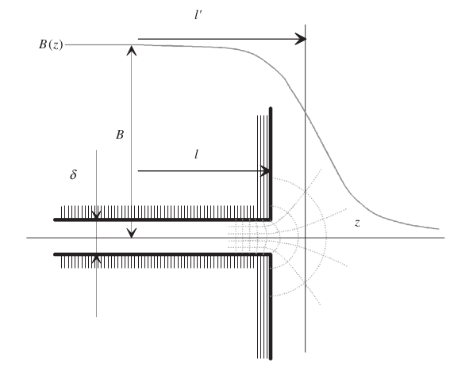
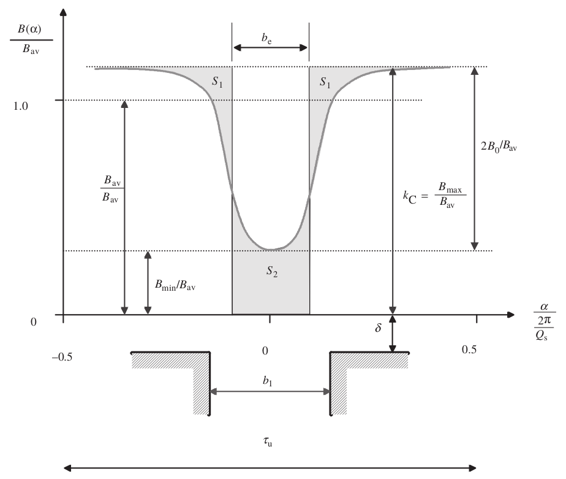
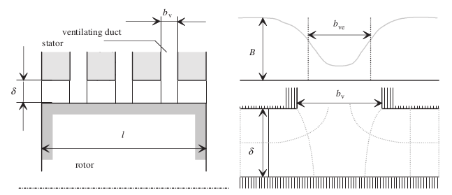
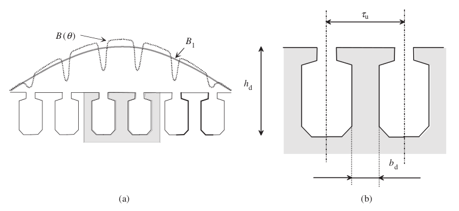
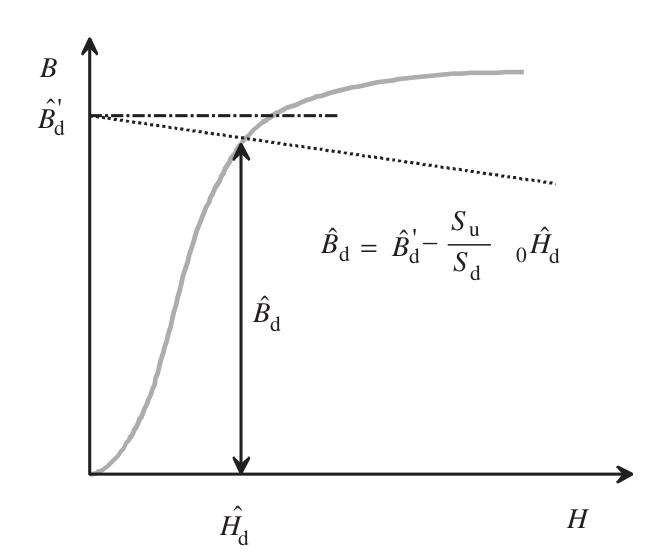
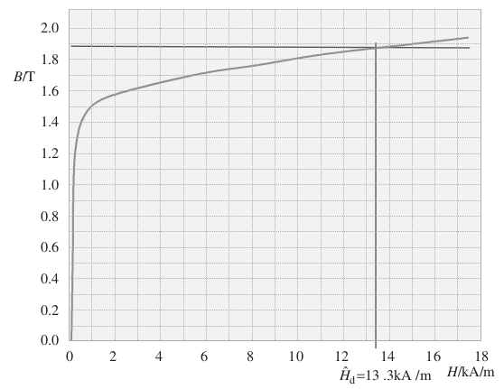
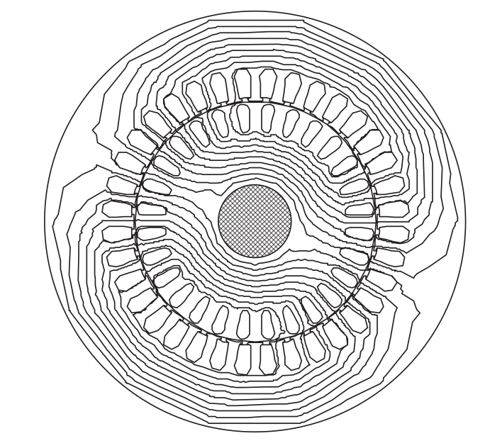

class: center, middle # EE-564 Design of Electrical Machines ## Ozan Keysan [ozan.keysan.me](http://ozan.keysan.me) Office: C-113 <span class="meta">•</span> Tel: 210 7586 --- # Equivalent Core Length  --- # Carter's Coefficient  --- # Example: --- # Equivalent Core Length with Cooling  --- # Tooth Flux  --- # Tooth Flux  --- # Example  --- # Back Core Flux --- # D-Q Axis  --- # D-Q Axis <img src="https://www.pantechsolutions.net/images/stories/k2-tutorials/synchronous-machine-and-the-main-principle-of-the-vector-control.jpg" alt="Drawing" style="width: 750px;"/> --- # D-Q Axis <img src="http://www.empiremotor.net/images/larg-GA200_4P_FEA.jpg" alt="Drawing" style="width: 700px;"/> --- # Example --- ## You can download this presentation from: [keysan.me/ee564](http://keysan.me/ee564)